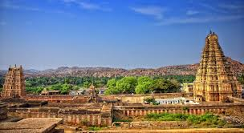
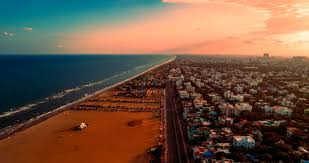
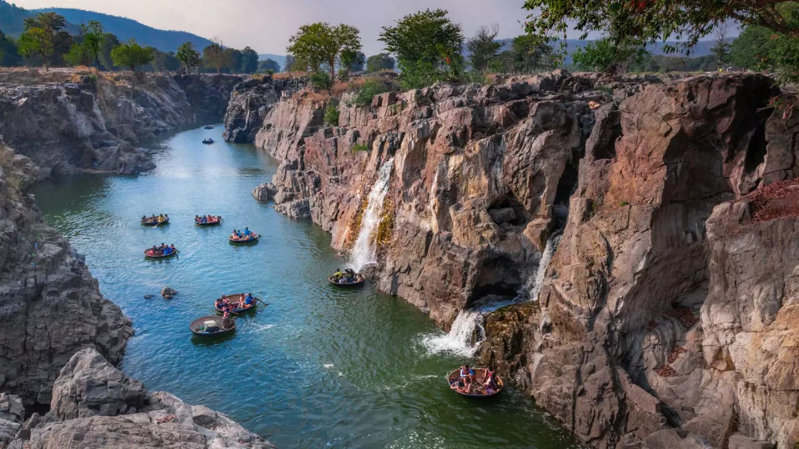

chennai
ooty
keishnagiri
pondicharry
beautifull start of
tamil nadu
WELL COME
TO
TAMIL NADU

Chennai formerly known as Madras,
is the capital city of Tamil Nadu,
the southernmost state of India.
Ooty (short for Udhagamandalam)
is a resort town in the Western Ghats
mountains,in southern
India's Tamil Nadu state.

Krishnagiri is a city in
the state of Tamil Nadu,
India, and it
serves as the administrative
headquarters of
Krishnagiri District

Pondicherry now known as
Puducherry is the capital
and most populous city of the
Union Territory of
Puducherry in India.